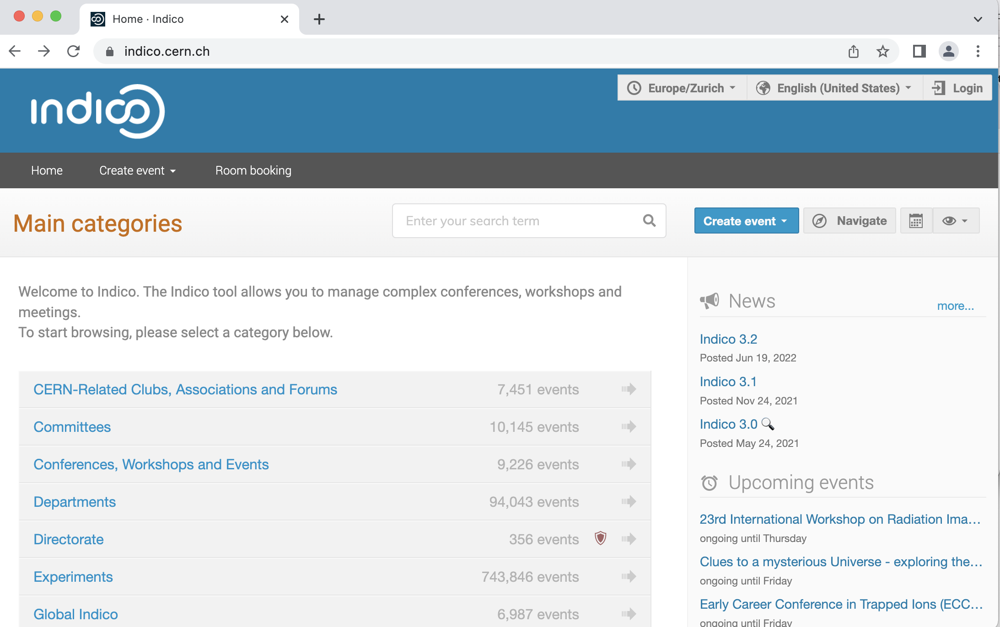
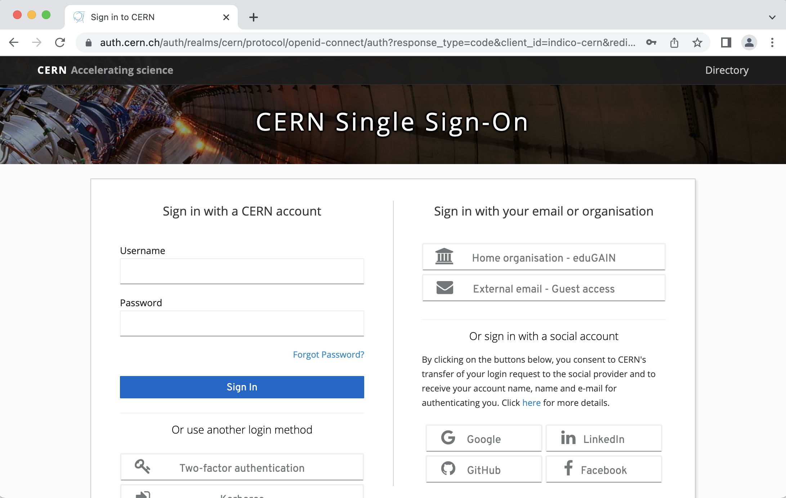
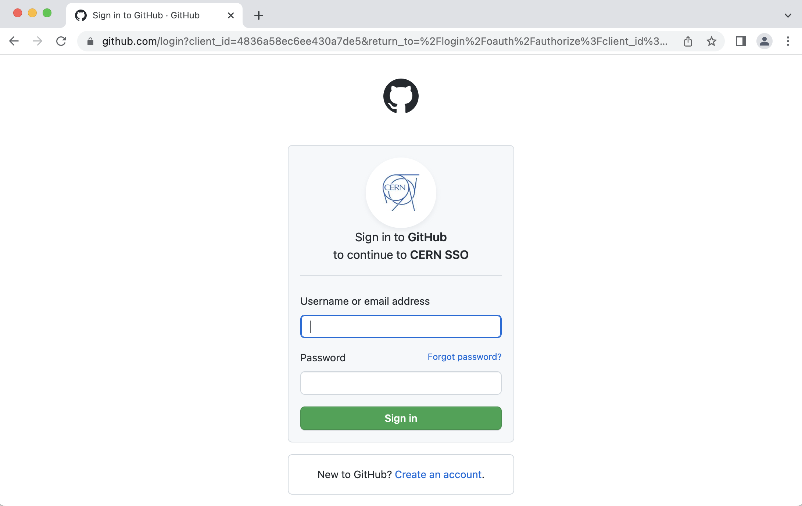

Indico¶
The Ask-JGI weekly meetings are managed through indico.
Creating an indico account¶
If you are new to indico, you can create an account using your GitHub credentials. If you don’t have a GitHub account, we recommend you get one! It is definitely going to be useful if you’re working in the data science domain. Follow the instructions here to join GitHub.
To create your indico account using your GitHub credentials, simply follow the instructions below:
Navigate to the indico homepage and select the login icon in the top right corner of the screen, as illustrated below. 
You will then be greeted with the below sign in page. If you do not already have an indico account then the easiest thing to do is to sign in using your GitHub credentials. To sign into indico using your GitHub credentials, select the GitHub icon listed under the option
Or sign in with a social account. Once you select this option you will be directed to the following sign in page. Enter your GitHub credentials here and you will be able to create your indico profile. 